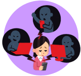
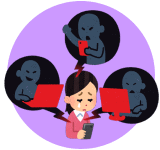

SNSは自分で情報の発言や収集が可能なので便利で使いやすいですが、思わね落とし穴もあります。
マナーを守ろう
友人が写っている画像を許可なく投稿しない。
誹謗中傷など批判的な内容はさける
投稿する前に
| 投稿やメッセージの内容はよく見直しましょう！ 内容によっては加害者にも被害者にもなる場合があります。 |
 |
SNSは自分で情報の発言や収集が可能なので便利で使いやすいですが、思わね落とし穴もあります。
友人が写っている画像を許可なく投稿しない。
誹謗中傷など批判的な内容はさける
| 投稿やメッセージの内容はよく見直しましょう！ 内容によっては加害者にも被害者にもなる場合があります。 |
 |